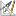

Introduction
This module was intended for documentation purposes, even though it features interactive handling now.
Refreshing every 10 minutes it can also be used to observe traffic, errors, broadcasts, discards, cpu
usage or temperature of devices.
Maps are written on a per user basis to html/log. Upon accessing this module the last map will be
displayed without interactive features.
Graphs are only drawn in PNG and only for the 1st time the map is generated, because they'll be deleted
afterwards. This may be a problem, if you wish to save the picture (screenshot always works, though).
Alternatively SVG or even interactive json maps (devices in flat map type only) can be created.
The node you click moves to the center and the whole map adjusts itself around it.
The source of the map can be used in other applications as well.
Usage
- "PNG"png" generates truecolor, "8bit" generates 256 color png images respectively. They can be
included in the combination report or various lists.
- SVG is used for vector drawings, which can be imported by other applications. You probably want
to use "shapes" instead of "icons" unless you copy them into the right place on the destination.
- Hover over the input fields and icons to get hints.
- If you enable dynamic-edit (far right walk-icon above "Execute"), the map will be redrawn upon
any input and fields are disabled if they're of no use with the current settings. This works best if
the browser supports HTML5 properly.
- To get a feel for this rather complex part of NeDi, use the various
icons to create maps in different contexts.
- A "geo" map will try to find the best suited background image automatically. E.g. the regional one,
if you're only drawing the Shire region and you've uploaded a map-Shire.jpg into html/map with System-Files for example.
- Assuming you've edited this region with Loced before, it'll now use the city coordinates, you've entered
to put the city icons. If you draw at building level, they'll simply be arranged around
the city coordinates using circle method.
Details
The general approach of drawing those maps, is to use polar coordinates, where each level (e.g. a city)
forms a circle. Devices are arranged based on their neighbors and move towards the center depending on the
number of links they have. This does not always work out, but generally yields acceptable results after some
tweaking. The following sections explain how this is done:
Name & Filter
- Title of Map
- Filter what should be shown
Main
- Size (can be adjusted in URI) and format of map
- For hierarchical maps use "bld" (draws buildings with floors) or "ring" (draws buildings as circles)
types. This lets you draw region, city or building level maps leveraging SNMP location information formatted
as described on the NeDi homepage.
- The "geo" type relies on information and maps you've edited with Loced (Google Map support may be
considered at a later stage).
- Alternatively you can select "flat" which still gives you the ability draw maps without any location
awareness but display non-SNMP devices or even nodes.
-  defines the center of your map and its top level rotation.
Layout
 defines how links are drawn.
Sometimes "straight" is the best choice, but sometimes you'd prefer an "arc", to accent the link's bandwidth
or load information.
defines how links are drawn.
Sometimes "straight" is the best choice, but sometimes you'd prefer an "arc", to accent the link's bandwidth
or load information.
- The "Link Information Location" field (I) lets you position this information further from the center, if
it gets in the way of other items.
- The "Link IF/IP Location" (E) determine how far this label should be positioned from the link ends.
 lets you choose how map-nodes should be represented.
lets you choose how map-nodes should be represented.
- The weight (W) defines how heavy a node gets (e.g. moves to the center) based on its links.
- Link length (L) and the shortening factor (S) determine how long the links are and the amount of shortening
for lower levels (e.g. region -> city -> building). This determines how big your map (more precisely those circles)
is going to be.
- allows for rotating city (C) and building (B) levels.
- Floor size (F) sets the building size when actual devices are drawn in hierarchical maps. This value can
be as small as 8 if "Tiny Shapes" is selected above to generate a
bird-eye view of your network.
- Room Columns (R) lets you control how wide those buildings are represented.
Show
- Toggle displayed information on and off. Hover over icons and checkboxes to get more info.